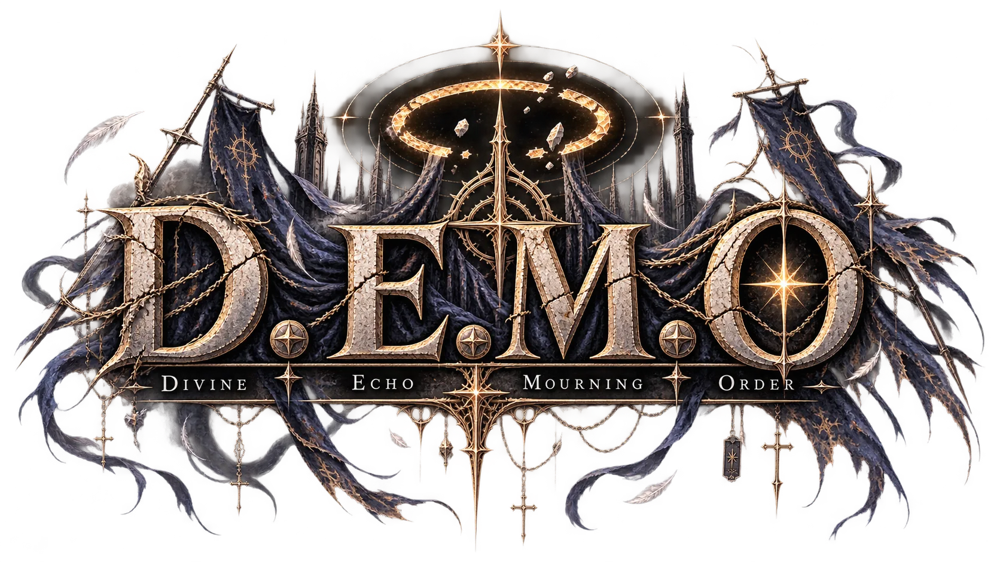

OK
勝利の門
まだ歩く
街へ帰る
次の階へ
喪の道
まだ歩く
ボスへ跳ぶ
OK
帰還
⏸ 一時停止中
倒れた
経験値を失った。
3
秒後に立ち上がる……
更新情報
OK
次回から自動で出さない
ステータス
▾
装備
▾
100
0
0
Lv
1
ポイント
0
装備
0
技能
0
街
0
設定
回避
AUTO
攻撃
装備
閉じる
技能
閉じる

タップして始める
あとから設定でやり直せる（最初から始まる）
職業を変える
やめる
選んだ職で初期武器・伸びるステータス・使えるスキルが変わる。あとから設定で変更できる（最初からやり直しになる）。
街
閉じる
覚悟
あとで選ぶ
設定
閉じる
職業を変える（最初からやり直し）